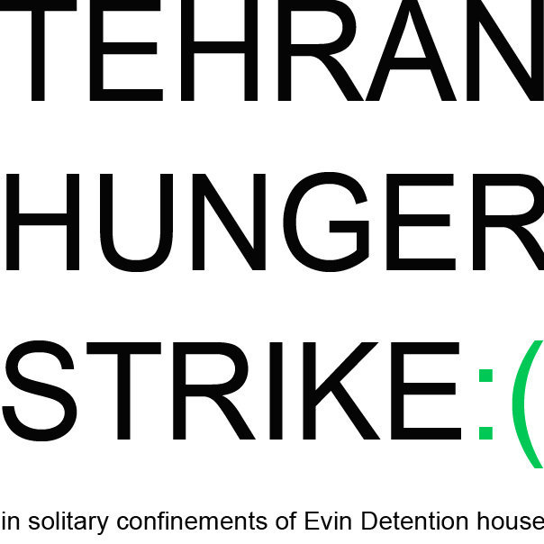

|
|
|
Browsing
Contact Us |
Campaigners |
Face to Face |
Tribune |
Interview |
News |
On the Web |
One Million |
Report
Farsi | Français | German | Italian | Spanish | العربية Also in this section
|
 Human Rights Watch: Iran: Stop Abuse of Political PrisonersTuesday 10 August 2010 Iran: Stop Abuse of Political Prisoners 17 in Solitary Confinement After Protesting Ill Treatment; Families Threatened (New York, August 6, 2010) – Iranian prison authorities should end the solitary confinement of 17 political prisoners and afford them all the protections to which they are entitled, including access to their families and lawyers, Human Rights Watch said today. All 17 have been on a hunger strike since July 26 to protest deteriorating conditions inside Evin Prison and have been prohibited from contacting their families. The 17 are among hundreds held in Ward 350 of Tehran’s Evin Prison, many of whom were unlawfully detained as part of the mass arrests of political dissidents and peaceful demonstrators following the disputed June 12, 2009 presidential election. There is speculation that more prisoners may have joined the hunger strike in recent days. “Throwing these prisoners into solitary confinement instead of responding to their legitimate concerns only causes them further harm,” said Joe Stork, deputy Middle East director at Human Rights Watch. “They need to be reintegrated back into the general population, get the care they need, and be allowed to contact their loved ones immediately.” Authorities transferred the 17 to solitary confinement on July 26, after they complained about prison conditions. A family member of one inmate told Human Rights Watch that as of August 5, three of the prisoners had begun a “dry” hunger strike, refusing to eat or drink anything. The family member expressed serious concern about the deteriorating condition of several of the inmates. Since the inmates began their hunger strike authorities have transferred several of them to the prison clinic for treatment with serum, but usually returned them to their cells shortly thereafter. Several of the 17 suffer from medical conditions that require vigilant care, such as diabetes, multiple sclerosis, and heart disease. The 17 hunger strikers are: Bahman Ahmadi Amoui <http://www.hrw.org/en/news/2006/06/...> , Gholam Hossein Arshi, Ebrahim Babaei, Babak Bordbar, Majid Darri, Jafar Eghdami, Koohyar Goodarzi <http://www.hrw.org/en/news/2010/01/...> , Peyman Karimi-Azad, Ali Malihi, Abdollah Momeni <http://www.hrw.org/en/news/2007/07/...> , Hamid Reza Mohammadi, Zia Nabavi, Hossein Nouraninejad, Ali Parviz, Keyvan Samimi, Mohammad Hossein Sohrabirad, and Majid Tavakoli <http://www.hrw.org/en/news/2007/09/...> . They include journalists, civil society activists, student activists, human rights activists, political opposition members, and Iran-Iraq war veterans. Human Rights Watch has documented the government’s arbitrary targeting, arrest, and detention of several of these prisoners for their political activities during the past few years. Kaleme, a website affiliated with the former presidential candidate and opposition leader Mir Hossein Mousavi, reported that the authorities sent the 17 to solitary confinement after they complained about prison conditions and the ill-treatment of fellow inmates. The inmates began their hunger strike after prison officials transferred them to solitary confinement. During their transfer to solitary confinement, prison guards allegedly threatened and verbally harassed them. Since last week authorities have cut off all communication between Ward 350 inmates and the outside world, denying all prisoners there visitation rights and daily telephone calls. On August 2, the 17 inmates issued a statement with five demands, including full respect by prison officials of all rights guaranteed to prisoners by law, an end to their solitary confinement, an increase in the time allowed for telephone calls, and improved access to medical facilities. The statement from the 17 said that prison authorities routinely harass prisoners, arbitrarily limit or deny visitation and telephone privileges, and fail to provide basic medical treatment and accommodations. They also complained of severely overcrowded conditions in Ward 350. Reports by the International Campaign for Human Rights in Iran indicate that prison authorities are systematically denying needed medical care to political prisoners. Persian-language media have reported that since the inmates initiated their strike their families have attempted to speak with the Tehran prosecutor, Jafari Dolatabadi, and other officials to gain access to the inmates, secure their transfer back to the general ward, and improve prison conditions. On August 2, after they were again turned away by Evin Prison guards, members of the families began their own hunger strike in solidarity with the 17 inmates. On August 4, after family members gathered outside the General Prosecutor’s office in Tehran to demand access to their relatives in detention, anti-riot police attacked them with batons, forcibly removed pictures of their imprisoned family members from their hands, and threatened them with arrest, Kalame reported. An Iranian human rights activist in close contact with family members told Human Rights Watch that in recent days government authorities have threatened the families and warned them not to give press interviews. Both Iranian law and international law require prison authorities to provide basic necessities to all prisoners and to treat them with dignity and respect. The International Covenant on Civil and Political Rights, to which Iran is a state party, prohibits inhuman or degrading treatment or punishment. In 2004, the United Nations Working Group on Arbitrary Detention criticized Iran’s systematic use of solitary confinement and noted, “[S]uch absolute solitary confinement, when it is of a long duration, can be likened to inhuman treatment within the meaning of the Convention Against Torture.” The UN Basic Principles on the Treatment of Prisoners state that “efforts addressed to the abolition of solitary confinement as a punishment, or to the restriction of its use, should be undertaken and encouraged.” In addition, Articles 22 and 39 of Iran’s Constitution prohibit affronts to the dignity of individuals and detainees. The State Prison Organization regulations require prison authorities to provide proper food, shelter, and personal hygiene to inmates. They guarantee detainees the right to medical care and supervision, family visits and communications, and time out of prison in cases of family emergencies. A lawyer who represents several striking inmates told Human Rights Watch that the authorities also routinely bar lawyers from meeting with their clients: “In order to visit my clients I have to go to court, even though the law simply says that I can go visit my clients,” the lawyer said. The lawyer told Human Rights Watch that recently, instead of issuing orders to allow the visits, courts have been referring lawyers to the prosecutor’s office. “I have gone to visit the Tehran prosecutor many times, but I have not been able to meet with him,” this lawyer said. The prisoners are only asking for what Iran is obliged to do under its own laws,” Stork said. “Their struggle to exercise their most basic rights as prisoners shows how serious Iran’s human rights crisis has become.” For more Human Rights Watch reporting on Iran, please visit: For more information, please contact: In New York, Faraz Sanei (English, Farsi): +1-212-216-1290; or +1-310-428-0153 (mobile) In Washington, DC, Joe Stork (English): +1-202-612-4327; or +1-202-299-4925 (mobile) |